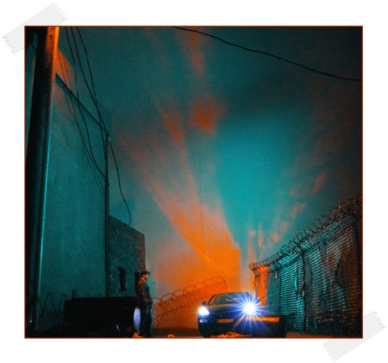

- CHANGMO
- SUPERBEE
- JUSTHIS

[Verse 1: CHANGMO]
알다시피 내 출신은 리, 그걸 멀리 보면 읍 그걸 멀리 보면 시, 그걸 멀리 보면 도
그걸 멀리보면 나라, 거를 멀리보면 원 zoom zoom zoom 특별시를 향해 zoom
작은 나라 작은 도시, 작은 대로 위의 porsche 현재 속력은 150 입엔 물은 채로 보헴
다신 연락하고 싶지 않은 년의 문자 '모해' 몇 년 전의 나면 먼저 내가 보냈겠지 '뭐 해?'
사랑을 원해, 리얼함을 원해 리얼이래놓고 CG처리 하네 설리를 이 동네는 약간의 비열함이 통해
그래서 힘들어, 난 그저 치열함을 통해 여기까지 온 놈 그리 바라던
돈
드림카, chrome hearts, off white 옷, 참 동화 마냥 이쁜 그런 결말, 허나 끝이라기엔
내가 존나 어려, 락커처럼 숨질까 해
[Hook: CHANGMO, SUPERBEE]
Yeah 스물다섯 포르쉐를 샀어 물론 일시불, 내 친구 차는 masi 빠르면 비행기, 비행기도 살래
못 죽여 넌 나를 죽이는 건 말레 Ooh Ooh selfmade orange 오 나를 불러라 selfmade orange
Ooh Ooh selfmade orange 오 나를 불러라 selfmade orange Yeah
스물다섯 개구릴 샀어 일시불 갔지 내 놈은 masi 빠르면 비행기, 비행기도 살래
못 죽여 넌 나를 죽이는 건 말레 Ooh Ooh selfmade orange 오 나를 불러라 selfmade orange
Ooh Ooh selfmade orange 오 나를 불러라 selfmade orange
[Verse 2: SUPERBEE]
yo, yo, yo, yo, Kurt Cobain처럼 입엔 샷건 but 내 총구는 너흴 겨눠 like gunna
watch the sun come up, 치워봐 똥폼은 어차피 난 마지막의 왕이 되어 죽어 견훤, Hhh
너무 긴 긴 과도기, 다 친 친 연예인 표정 감어 짓지만 너네 빙시들인거 내 눈에 다 비침
니 목걸이 난 비웃지 그거 안 반짝여 짭이거든 그렇지? ahh? self-made orange! 허나 강남 아닌
덕소, 마포에 있지 ouu! self-made orange! 넘 빨리 달려 니 여친이 차에 토했지 skirrrt!
self-made orange! 누구들한테는 이런 내 가사도 poetry 돼
self-made orange! 울 인생은 헉! 소리나 헉! @_@, $%^&!@
[Hook: CHANGMO, SUPERBEE]
Yeah 스물다섯 포르쉐를 샀어 물론 일시불, 내 친구 차는 masi 빠르면 비행기, 비행기도 살래
못 죽여 넌 나를 죽이는 건 말레 Ooh Ooh selfmade orange 오 나를 불러라 selfmade orange
Ooh Ooh selfmade orange 오 나를 불러라 selfmade orange Yeah 스물다섯 개구릴 샀어
일시불 갔지 내 놈은 masi 빠르면 비행기, 비행기도 살래 못 죽여 넌 나를 죽이는 건 말레
Ooh Ooh selfmade orange 오 나를 불러라 selfmade orange
Ooh Ooh selfmade orange 오 나를 불러라 selfmade orange
[Verse 3: CHANGMO]
강마에로 힛, 프라다 노래로 힛 수입 맥주 노래 힛 몇 마디 안한 노래 힛 처음 히트 때는 백,
다음 히트 때는 천 다음 히트 때는 억 다음 히트 때는 (워!)뒤를 돌아보니 와, 내 엄마는 미국에 내 동생은 유학파,
아버진 뭐 술독에 내 손에는 수억 원, 쥐어본 최대치는 백 엄마도 모르는 무게 엄마 나 어떡해야 돼 평생 내가 써버려버린 돈에 비하면 올해 내버릴 내 세금이 더해
처음처럼 대신 박아뿌는 진 토닉 준 것 없는 땅에 외쳐 부러 '뭐 씨발럼아' 녹슨 수저 딱 하나 준 여 땅 위 살아남아 복수마냥 조져 청담을
25 고졸 락스타 발악과 눈물 결핍 가득한 내 현금 좆을 박어
[Hook: CHANGMO, SUPERBEE]
Yeah 스물다섯 포르쉐를 샀어 물론 일시불, 내 친구 차는 masi 빠르면 비행기, 비행기도 살래
못 죽여 넌 나를 죽이는 건 말레 Ooh Ooh selfmade orange 오 나를 불러라 selfmade orange
ooh Ooh selfmade orange 오 나를 불러라 selfmade orange
Yeah 스물다섯 개구릴 샀어 일시불 갔지 내 놈은 masi 빠르면 비행기, 비행기도 살래
못 죽여 넌 나를 죽이는 건